Images
Lay H&E and multiplexed stains under the cells, and set each channel’s colour and levels.
Tutorial in preparation
This tutorial is being written. The outline below shows what it will cover.
On this page6
A tissue image is drawn under the cells: an H&E scan, a DAPI image or the stains of a multiplexed panel. The cells stay on top, so a cell type, a gene or a lasso can be read against the tissue it comes from.
An image is a layer, like Polygons and Transcripts. It is shown from the toolbar and tuned in the Image tab, and nothing about it changes the cells or their coordinates.

The pictures on this page use one section of mouse small intestine with a four-channel image: DAPI, ATP1A1/CD45/E-cadherin, 18S and alphaSMA/vimentin.
| I want to… | Read |
|---|---|
| Show an image, or switch between images | Show an image |
| Set colours, levels and what the cells do | The Image tab |
| Place a cell type or read a stain in the tissue | Ask questions |
| Know how the image works with other tools | Other tools |
| Look up a control, its hover text or its keys | At a glance |
| Add an image to a dataset | Add an image |
The toolbar has an Image button with a + beside it, next to Transcripts and Boundaries.
Layer
Appears when a tissue image was mapped at import; the + beside it adds one.
The button
Read its state. Grey: the dataset has no image. Normal: it has one and none is shown. Green, with the image's name: an image is on; with two or more, the label counts them.
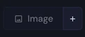
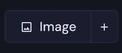
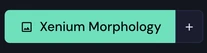
Hover. The tooltip says what the button does now: No image pyramid available for this dataset, Pick a registered tissue image, or the name of the image on with click to pick another image.
3D. Clicking the button in a 3D dataset only says that tissue images are 2D-only in this version.
The Image tab holds everything that decides how the picture looks. Its controls follow the order of the tab: the image, what the cells do over it, the channels, and the levels of each channel.
Layer
Appears when a tissue image was mapped at import.
Image and opacity
Read the image. The header counts the images and channels. The line below gives its size in pixels and its pixel size. Hovering the name shows the size and the source file.
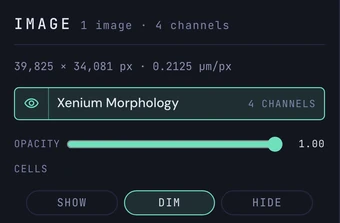
Show or hide. The eye switches an image on or off. Click the name to choose the image whose controls are shown below. Several images can be on at once; the colour image is drawn first, underneath, then the fluorescence images in the order of the dataset. The order cannot be changed.
Fade it. Opacity runs from 0 to 1; 1 is the start.
Cells over the image
Choose what the cells do. Show draws them at normal strength. Dim fades them so the image shows through; segmentation outlines stay. Hide shows the image alone, but cells still answer a hover. The arrow keys move between the three.

Dim changes only the strength of the cells, never their colours. Opening the tab switches the cells to Dim, unless a choice was made before; the choice is kept for the dataset.
Channels
Switch channels on and off. One row for each channel, with a colour dot and the tag the file gives it, such as NUCLEAR. Click a row to switch the channel on or off. Alt-click shows that channel alone. The title above the list says N of M shown.
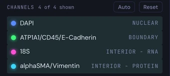
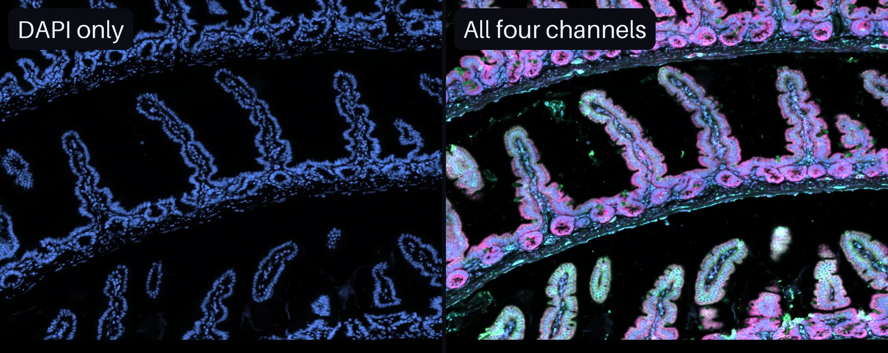
Limits. At most 8 channels are on at once; a ninth asks to hide one first. With more than 8 channels a search box appears above the list. A channel card has a × to hide it. Channels cannot be renamed: the names come from the file.
Recolour. Click the colour dot of a channel's card. A panel offers white, the nuclear blue and twelve more colours, and Custom… opens a colour picker. Escape closes it.
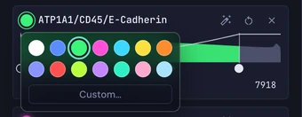
The first colours. A colour named in the file is used. A nuclear stain, such as DAPI, Hoechst or DRAQ5, starts blue. The others take the first free colour. A channel is on from the start if the file marks it visible, otherwise the nuclear one, otherwise the first.
Levels
Read a card. The histogram counts the pixels of the channel on a square-root scale, so the dim end has most of the width. Inside the window it is coloured; outside it is grey. The line over it is the curve that maps intensity to brightness.
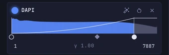
Drag a handle. The left handle sets the black point, the right one the white point, the middle diamond the gamma. Double-click the diamond to set the gamma back to 1. Click in the histogram to move the nearer of the two points there.
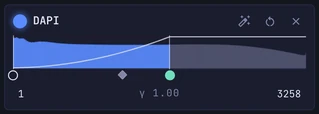
Type a value. The two boxes take black and white points in the units of the image; Enter sets them. Keys. On a focused handle the arrow keys move one step of 1/255 of the range, Shift ten steps; for the gamma 0.02, Shift 0.1. Home and End send the points to the ends, or the gamma to 1.
Auto and Reset. The wand in a card fits that channel to what is on screen: from the 2nd to the 99.8th percentile. Auto above the list does it for every shown channel. The circular arrow, and Reset above the list, restore the window the file suggests and a gamma of 1.
Colour images (H&E)
One card. A colour image, such as an H&E scan, has no channel list. It has one Levels card, without a colour dot or an Auto button, with the black point, white point and gamma in the range 0 to 255.
Saturation. A slider from 0 to 2, 1 at the start, shown as ×1.00.
Reset. The arrow of the card restores black 0, white 255, gamma 1 and saturation 1 and leaves the opacity as it is.
A colour image is drawn first, with the opacity of the tab. A fluorescence image is drawn on a black plate the size of the image, with every channel added as light, so it looks the same on the light theme.
A cluster or a stain means more next to the tissue. Three recipes show the way; each uses only the controls described above.
Recipes
Appears when a tissue image was mapped at import.
Where does a cell type lie in the tissue?
Show the image.
Press Image and pick the image. In the tab, set the cells to Dim.
Focus one type.
Open Types, press None, then click one row. Only its cells keep their colour.
Read the result.
The dimmed image shows which structure the cells sit in. In the picture, cluster 7 lines the tips of the villi.
Look at the tissue alone.
Back in the Image tab press Hide, then Show again to bring the cells back. All in Types ends the focus.
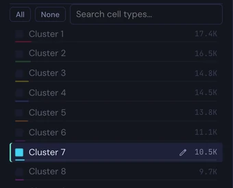
The image is never picked: a click or a lasso always reaches the cells, so a focus cannot select tissue by mistake.
What does one stain show?
Look at one channel.
In the channel list, Alt-click a row. That channel is shown alone.
Fit it to the view.
Zoom to the region, then press the wand in its card (Auto). The window is fitted to what is on screen.
Add a second stain.
Click another row. Two channels add their light.
Tell them apart.
Click the colour dot of a card and pick a colour that contrasts with the other channel.

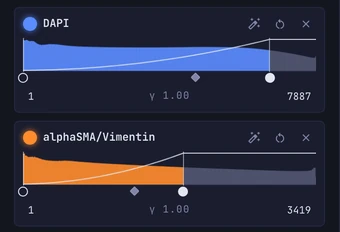
The default colours are chosen so that a new channel never repeats a colour that is already on; the dot changes any of them.
How can the image guide a selection?
Draw around it. Show the image with the cells dimmed. Press Lasso (or P) and draw around the structure the image shows. The selection holds the cells inside the line.
Check the hover. With Hide the cells are not drawn, but a hover still names the cell under the pointer, so the image can be explored cell by cell.
Keep outlines. With Boundaries on, outlines stay at full strength when the cells are dimmed or hidden.
The image is a background. Everything else keeps working on the cells.
| Tool | With an image |
|---|---|
| Lasso, hover | The image is never picked. A lasso selects cells, and with Cells set to Hide a hover still names the cell under the pointer. |
| Boundaries | Outlines stay at full strength when the cells are dimmed or hidden. |
| Transcripts | Molecules are drawn light or dark, depending on whether the image on screen is a colour image. Each tab has its own Show, Dim and Hide; both settings apply together. |
| Rotate, Fit | The image turns with the view. Fit view includes the whole image, also tissue outside the extent of the cells. |
| Capture | A capture waits until the image tiles have loaded. |
| 3D, Embed, Landscape | No image is drawn. The tab stays and says so. |
Most controls explain themselves when the pointer rests on them.
| Control | Hover shows | Click, drag, keys |
|---|---|---|
| Image button | What the button does now; the image on, if any | Click opens the menu; arrow keys move through it |
| + and ? | Add an image; the reason when + is off | Escape closes the sheet |
| Eye of an image | Show or Hide the image | Click switches it |
| Name of an image | Size in pixels, pixel size, source file | Click selects it |
| Cells: Show, Dim, Hide | What each does | Left and Right arrows move between them |
| Channel row | Long name and purpose of the channel | Click toggles, Alt-click shows it alone |
| Colour dot | Colour | Click opens the colours; Escape closes |
| Wand, arrow, × | Auto, Reset window and gamma, Hide this channel | Click |
| Black and white handles | Black point, White point | Drag; arrows 1/255, Shift ten steps; Home and End |
| Gamma handle | The level drawn at half brightness | Drag; arrows 0.02, Shift 0.1; double-click or Home sets 1 |
| Number boxes | Black point, White point | Type a value, Enter |
Most images arrive with the import (Importing). An image can come from three places; all of them are turned into a zoomable tile layer, so only the tiles in view are loaded.
From the .h5ad
The Images tile of the wizard's Map step lists the images found inside the file, under uns["spatial"] or in a SpatialData store, each ticked from the start with its size, type and number of channels. Untick a duplicate, a diagnostic image or a mask: each one only adds conversion time and storage. The preview lowres is never listed.
The boxes work with 2D spatial coordinates only; switch the interpretation to 2D spatial and the ticks are kept. If ticked images come from several sections, the section with the most is imported.
From a file
The Image files tile, in the band Images and boundaries, attaches a file of its own: give its path on the computer that runs PointillViz, press Inspect, check Name, Channels, Scale and Offset. Paste another path to attach a second image; Remove image takes one out.
| Format | Notes |
|---|---|
| TIFF, OME-TIFF, QPTIFF, BigTIFF | The largest image in the file is used. A multi-file OME set, such as the Xenium morphology_focus folder, is read by naming any one file. Compressed TIFFs need the imagecodecs package. |
| OME-Zarr | A folder or a .zip; also an image of a SpatialData store. |
| PNG, JPEG | BMP and WEBP are read as well. |
The tile is off when the import converts more than one file, when the interpretation is not 2D spatial, or when the Section column lays out more than one section.
Later, with +
An open dataset takes an image through the + beside the Image button. The sheet Add an image has the same fields as the wizard: type the path, press Inspect, then Add image. A bar shows the progress; the image appears without a reload and is switched on. The name must be new in the dataset.
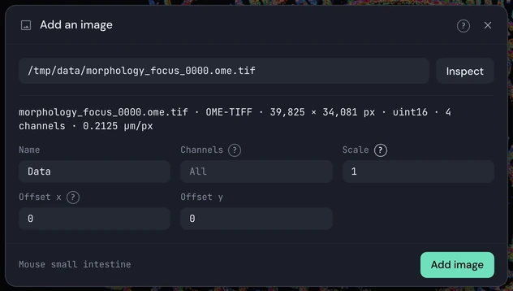
When + is off. It is off for 3D datasets, atlases and datasets that lay out several sections side by side, because a layer has one coordinate frame. The ? beside it gives the reason.
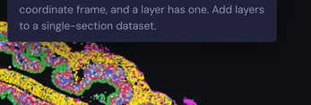
Scale and offset
Scale and offset
Scale. The cell coordinates for one image pixel; 1 means that one image pixel is one unit of the cells' coordinates. A pixel size given in the file is offered as a button, Use scale N.
Offset x and y. Where the top-left corner of the image sits, in the cells' coordinates.
After import. The viewer has no controls to move, scale, rotate or flip an image: it is placed once. Check it by showing the image with the cells dimmed; the nuclei should sit under the cells. A full rotation or shear can be given only on the command line or by a SpatialData store.